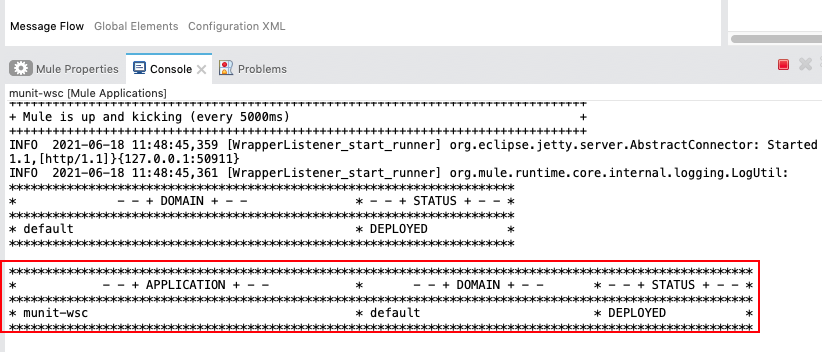
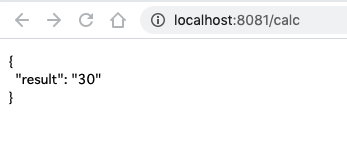

Last Updated: 2021-06-18
Overview
This guide provides an overview of the features of MUnit Test Recorder. This feature enables you to record a processing flow and then configure a unit test based on the captured event.
You'll see the test suite which you have created in the earlier lab can be automatically generated with this feature.
What you'll build
In this codelab, you're going to build the MUnit test suite which is equivalent to the one you have built in the previous lab. Thanks to the Test Recorder, you don't need to build it from scratch by leveraging operations provided by MUnit tools.
What you'll learn
- How to capture flow execution by leveraging MUnit Test Recorder
- How to customize the automatically generated Test Suite to make it meet with your need
What you'll need
- Anypoint Studio 7.5.0 or later
- MUnit 2.2.5 or later
- MUnit Anypoint Studio Plugin 2.5.0 or later
- Mule Runtime Engine 4.3.0 or later
(You can skip this section, if you have completed the previous lab and munit-wsc project is in place.)
Start Up Anypoint Studio
Open Anypoint Studio and specify the workspace you have used for the previous lab.
Open Up Mule Project to test
In the Package Explorer, find the project you have created in the previous lab. If the project is closed, right click the project and choose OpenProject.
Double click munit-wsc.xml under src/main/mule and open the canvas.
(Optional)Make Sure the app work fine
Right click the canvas and choose Run project munit-wsc
Wait until the application is deployed on your local machine.

Open up your browser and enter http://localhost:8081/calc in the URL bar.
Make sure the API returns the result of 10 + 20 which is 30.

Stop the application by hitting the terminate button.

Start up Test Recorder on the flow in interest
Right click munit-wscFlow and choose MUnit > Record test for this flow
Wait until Test Recorder is turned to waiting status.
Run the Mule Application to test
Open up your browser and enter http://localhost:8081/calc in the URL bar.
Make sure the API returns the result of 10 + 20 which is 30.
Observe Configure test button is now enabled on the Test Recorder window
Create the web app manifest
Click Configure test button
Specify self explanatory test name by adding recorder inside File name and Test name.
Hit Next button
Now let us make SOAP WS call mock instead of actually consuming the WS as we did in the previous lab.
Choose Consume operation.
Choose Mock this processor.
Observe Mock section to see what values are returned by this mock. If you expand Payload > body, you see 30 is returned in the AddResult field.
Hit Next button.
Hit Finish button.
You see the test suite is automatically based on your configuration.
If you choose Mock Consume and see Payload section, you find that mock_payload.dwl under munitwscFlowrecordertest folder is used for the mock.
If you open up the file, you will see the configured mock data is set to be returned.
Run the test suite
On munit-wsc-recorder-suite canvas, right click and choose Run MUnit Suite.

If everything is correct, the Console will show that the test is run successfully.
You'll also see the test result on the MUnit view which is on your left bottom corner.
You can see the Coverage report as you did in the previous lab.
Passed operations are marked with green tick.
Run all test suites available in the project
You can run the all test suites which available in the Mule project at once.
Right click on the project in the Package Explorer and choose MUnit > Run Tests.
You'll see the test suite you configured in the previous lab and the one generated in this lab are executed.
Congratulations, you've successfully built the MUnit test suite without developing test cases with MUnit tools!
In the real case scenario, you'll need much more test cases. You can utilize the auto-generated test case as a template and fork it so that you can avoid creating the test cases from scratch to save your time.
What's next?
Check out some of these codelabs...
- TBD